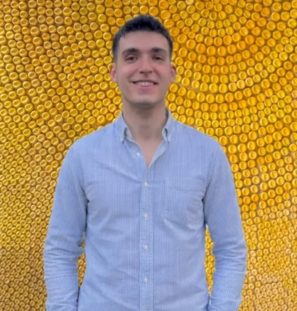

About
I completed my M.A. at Middle East Technical University in Ankara, Turkey, where I was a member of the METU Language and Cognitive Development Laboratory. My M.A. research, conducted under the supervision of Duygu Özge Sarısoy, examined children's interpretation of disjunction in Turkish (Thesis ↗, Slides). I received my B.A. in Foreign Language Education with minors in Psychology from the same institution in 2022.
My research interests lie broadly in experimental semantics and pragmatics, with a particular focus on language acquisition. I have worked on ellipsis, conditionals, and disjunction in Turkish.
curriculum vitae →
Research
- [In preparation] Enes Us, Duygu Sarısoy. "X-Marking in Turkish"
-
[Under revision]
Enes Us,
Duygu Sarısoy.
"Morphological access to alternatives fails to boost scalar implicatures: Interpretation of disjunction in Turkish-speaking children."
Sentences involving disjunction, such as "The girl likes pizza or pasta" often give rise to the inference that she does not like both. However, several studies report that children tend to interpret the sentence inclusively (i.e., she likes pizza or pasta, or possibly both) or conjunctively (i.e., she likes both). The alternatives-based account attributes this to children's difficulty accessing stronger lexical alternatives, while the ambiguity account proposes that disjunction is ambiguous for children. In this study, we tested these competing predictions using a Truth-Value Judgment Task with Turkish-speaking children, drawing on the unique morphology of Turkish disjunction markers, one of which contains the stronger alternative. Overall, children interpreted disjunctions inclusively or conjunctively, but not exclusively, even when a disjunction marker could facilitate access to a stronger alternative. These findings challenge the alternatives-based account and align with the ambiguity account, suggesting that access to a stronger alternative alone is not sufficient for achieving adult-like interpretations.
-
Enes Us
(2025).
Verb-Stranding VP Ellipsis in Turkish. In Barrie, Michael (ed.), Proceedings of the 18th Workshop on Altaic Formal Linguistics. MIT Working Papers in Linguistics, pp. 229–238.
[pdf]
Turkish allows null object constructions, and these constructions show certain properties, suggesting the presence of ellipsis operation. Previous analyses argue that these properties follow from Argument Ellipsis, but I argue that Verb-stranding VP analysis is present in Turkish. Providing evidence from the ellipsis of predicates, null adverb interpretations, and light verbs, I propose that VP internal constituents are not elided independently but rather they go unpronounced as part of the deletion of larger constituents (VPs).
Presentations
- Enes Us, Duygu Özge Sarısoy. (2025). "Morphological access to alternatives fails to boost scalar implicatures: Interpretation of disjunction in Turkish-speaking children." Poster at the Boston University Conference on Language Development [BUCLD 50], Boston University, November 6–9. ✦ Paula Menyuk Award
- Enes Us, Duygu Özge Sarısoy. (2025). "Revisiting Turkish X-marking: An Experimental Rating Study." Talk at the Conditional Constructions Across World Languages, INALCO, October 29–31.
- Enes Us, Duygu Özge Sarısoy. (2025). "Ambiguity or Implicature? Insights from Interpretation of Disjunction in Turkish-speaking Children." Poster at the Experimental Pragmatics Conference 2025 [XPRAG 2025], University of Cambridge, September 17–19.
- Enes Us. (2024). "Verb-Stranding VP Ellipsis in Turkish." Talk at the 18th Workshop on Altaic Formal Linguistics [WAFL18/SICOGG26], Jeonbuk National University, August 22–24.
- Enes Us, Elif Yılmaz, Deniz Zeyrek-Bozşahin. (2024). "Production of Conditionals in English and Turkish-speaking Children." Poster at the 10th International Symposium on Brain and Cognitive Science [ISBCS], Middle East Technical University, June 1. [poster]
- Enes Us. (2024). "Verb-Stranding VP Ellipsis in Turkish." Talk at the Konstanz Linguistics Conference [KLC], University of Konstanz, March 21–22.
Teaching
-
2022 – presentInstructor of RecordEnglish for Academic Purposes · TOBB University of Economics and Technology